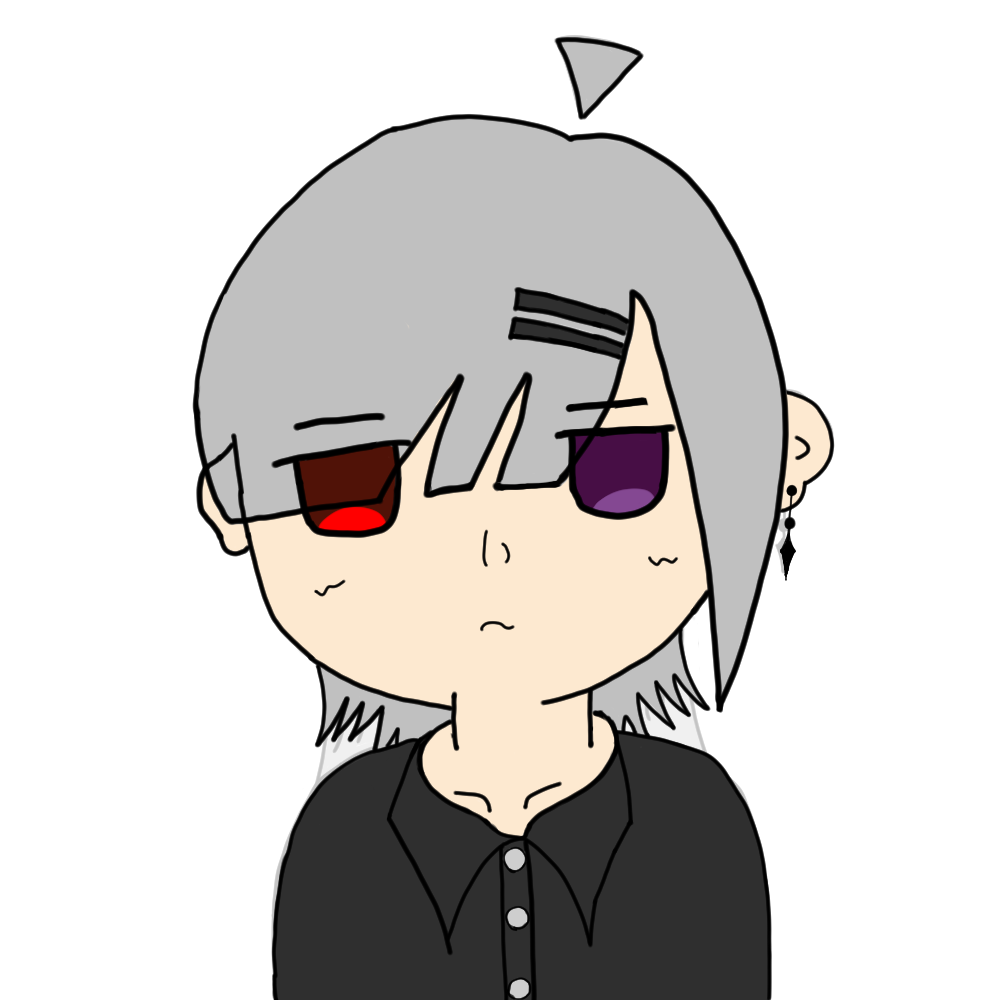
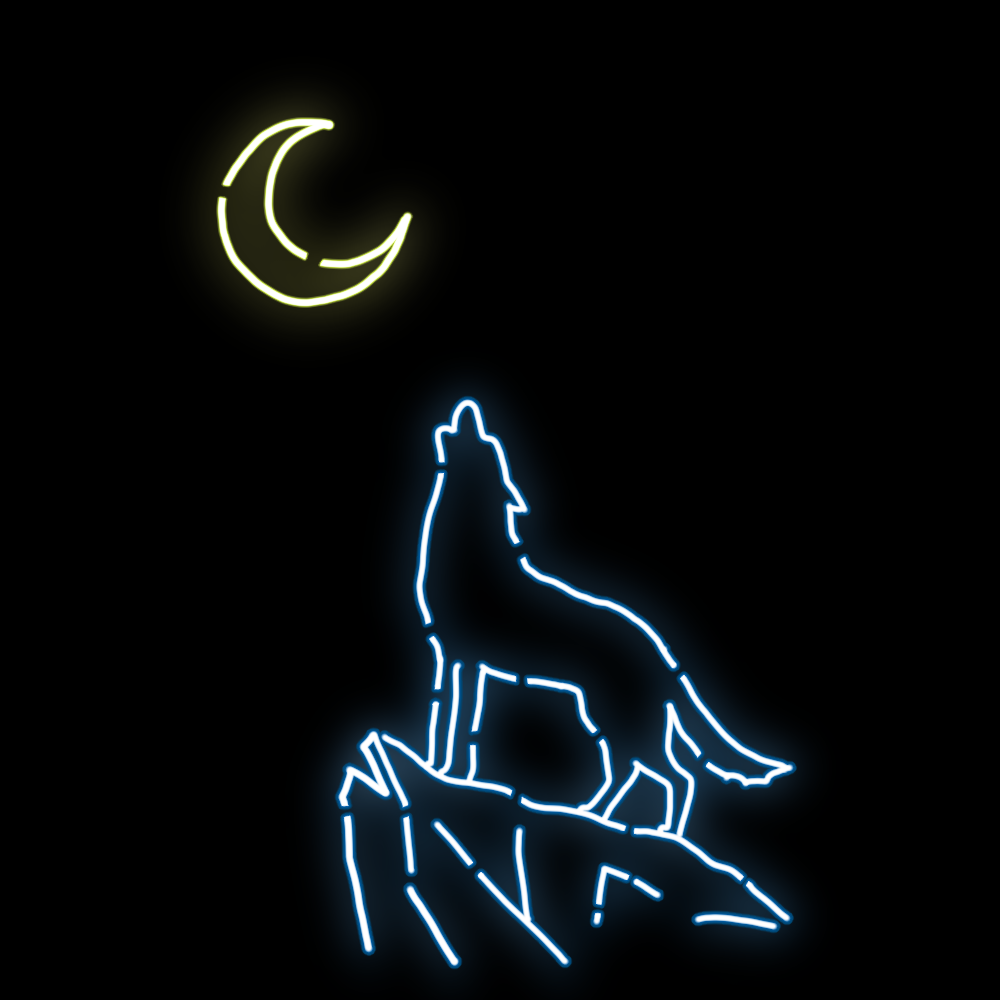
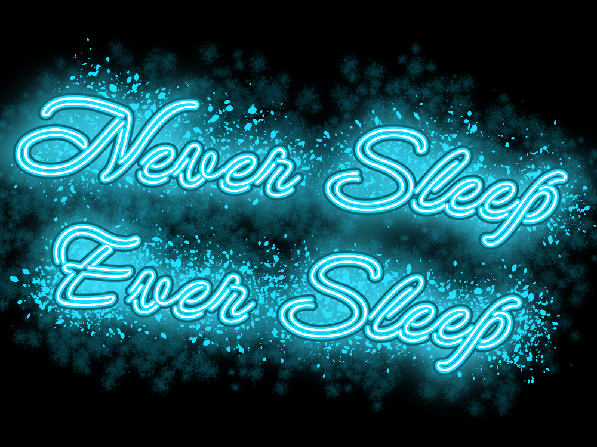
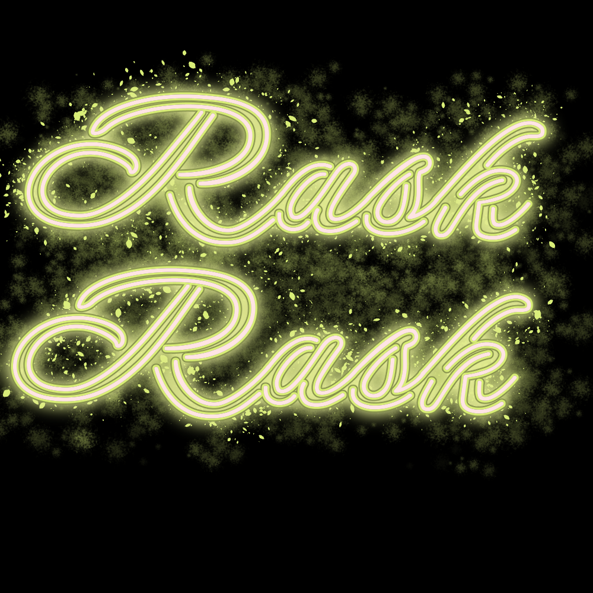
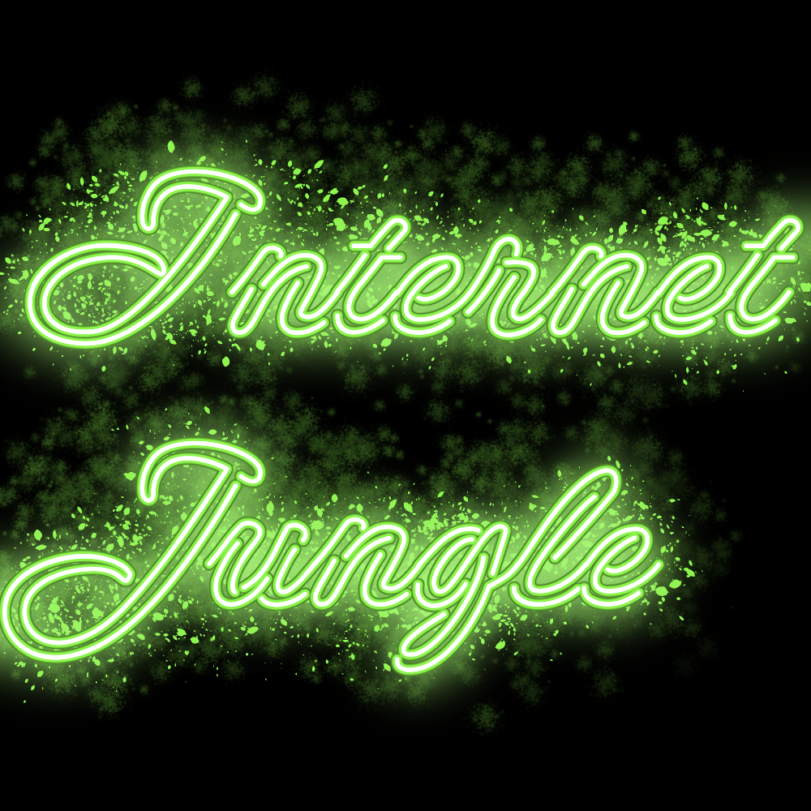
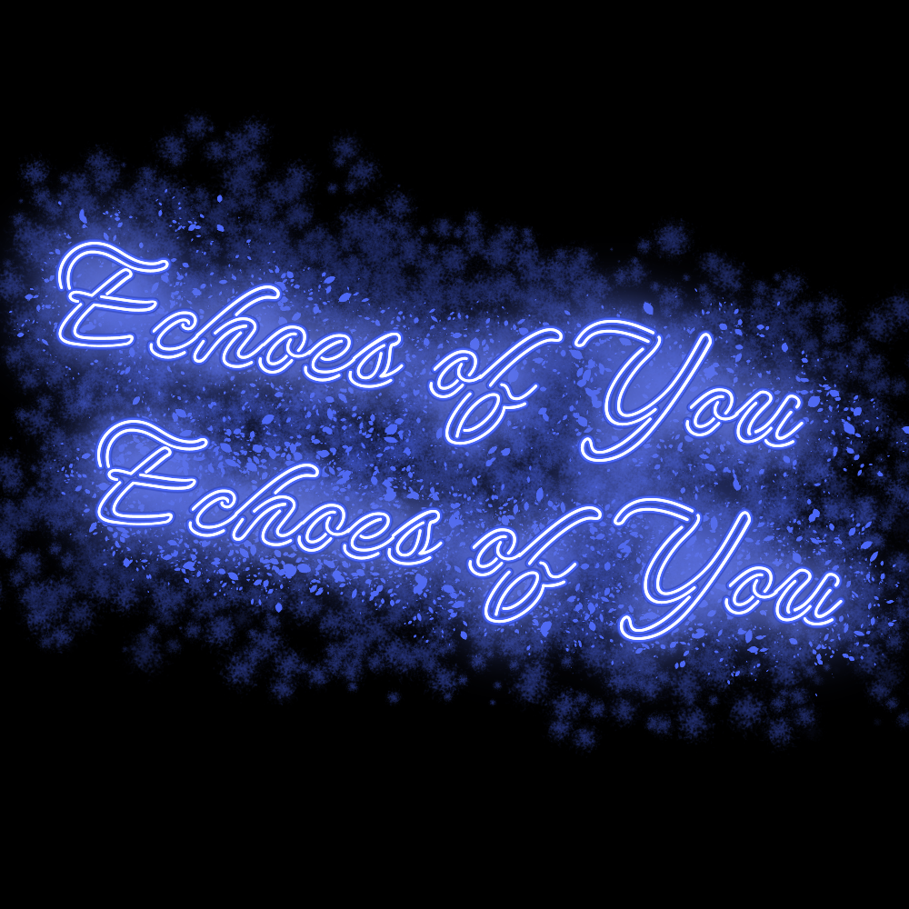
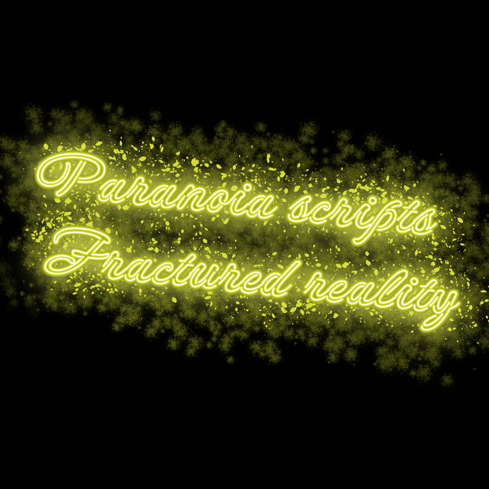
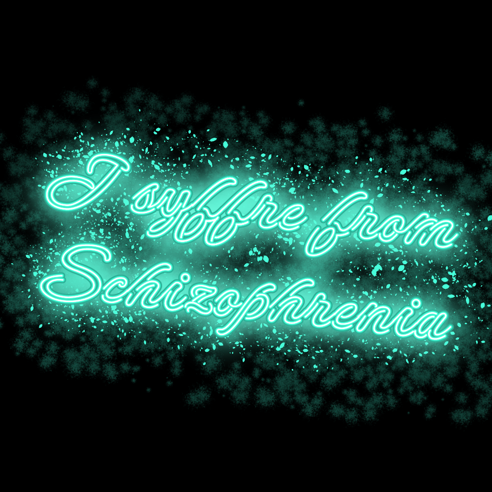

-
代理ちゃん。

かなり気に入っている。
人これしか描けない。 -
旧アイコンをモチーフとしたネオン絵

月に吠える狼なんてどうやっても絵になって良いよね。 -
ネオン系アートの確立された一枚。
私の絵はここから始まったといっても過言ではない
お気に入りの一枚。
-
練習で書いてみたグラフィティ絵。
FFから褒められてうれしかった記憶がある。
でもちょっと描くの大変。
-
ネオン系アートの確立に伴い、書き方を少し変えた。
ポップな色合いと暇さが伝わる一枚。
-
最高傑作の一枚。

FFに案をもらった。嬉しい。
寝たくないけど一生寝てたい。そんな二律背反をイメージ。 -
FFからの依頼(無償)の作品。

ラスクは食べ物由来。美味しいよね。
これはこれで気に入った色遣いになった。 -
インターネットは情報の錯綜するジャングルのようである。

というイメージの元作られたネオンアート。
IとJの筆記体、違いわかる？私はわからん。 -
デジタルな夢へ落ちてく。
そんな希望を込めた一枚です
みんなも一緒に落ちようよ。
-
時間があったので練習で作った一枚。
作り方が確立されてかなり早く作品が上がるようになった要因の一枚でもある。
でも心はこもってます。
-
おーばーどーず。
だめといわないけど。
ほどほどにね。 -
Echoes of You

まだ君がいる気がする。
そんなぽえむでさみしい一枚。 -
Paranoia scripts Fractured reality

「パラノイアが歪んだ現実を書き換える」
パラノイア
根拠のない強い不信感や疑念、被害妄想を抱く心理状態や精神疾患 -
I suffer from schizophrenia

統合失調症患者の私。
ただの自己紹介ですよ。